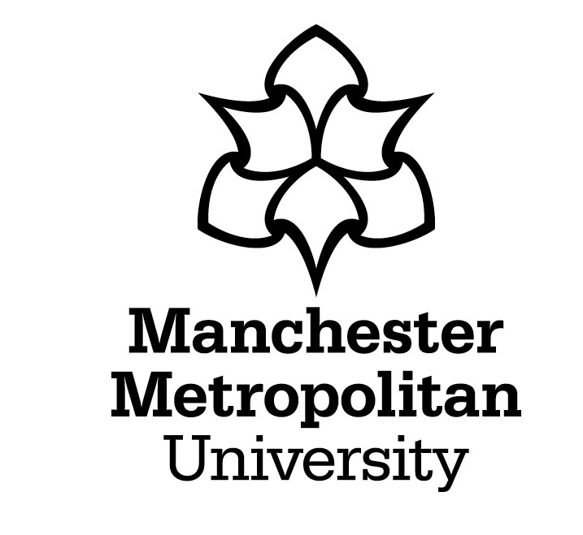
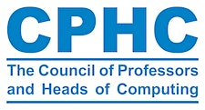

| Home | Registration | Program | Directions |
Funded by a CPHC special project grant, this 1-day workshop aims to bring together educational leaders in Higher Education computing and technology departments.
Large Language Models (LLMs) are transforming the way people work, especially in the tech sector, and their popularity poses an existential question to technology educators. How do we teach and how do we assess, considering the existence of AI Apps that are capable of performing well on traditional assessments? Together we will collaboratively explore and co-develop policy guidance on the usage of large language models (LLMs) such as ChatGPT within the assessment of technology-focused degrees.
We expect the outputs of the workshop to be:
|  |  |